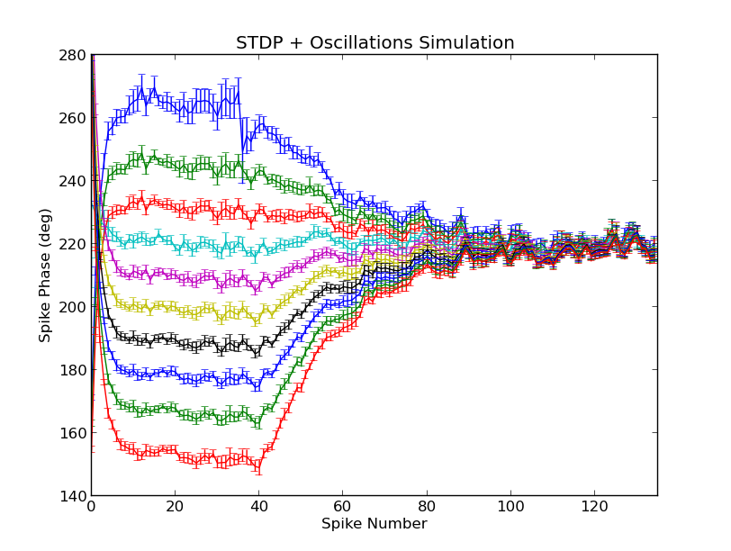

This is the model associated with the paper: Muller L, Brette R, Gutkin B (2011) Spike-Timing Dependent Plasticity and Feed-Forward Input Oscillations Produce Precise and Invariant Spike Phase-Locking. Front Comput Neurosci 5:45 This model file was supplied by Lyle Muller. This simulation requires Brian which can be downloaded and installed from the instructions available at http://www.briansimulator.org/ Usage: After installing Brian and downloading and extracting this archive you can start with a command python Muller_et_al_2011.py After a couple of minutes you should get a graph that looks like the papers figure 4C:  Muller_et_al_2011.py could be re-run with the other ratio values to generate figure 4B (ratio = 1.05), or 4D (ratio = 1.70).